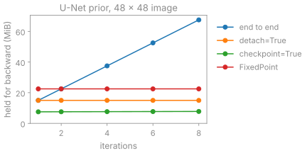

Learned reconstruction#
TL;DR
Operators and solvers are differentiable: the backward pass of \(A\) is \(A^H\), conjugate gradients are differentiated implicitly, and the other iterations are unrolled.
A network enters as the proximal step of an iteration, in plug-and-play, unrolled or fixed-point form, applied patch by patch to images held on the host.
bartorch provides the reconstruction side of training; losses, metrics, datasets and the training loop come from deepinv, MONAI, torchio and Lightning.
You use this when a reconstruction is part of a larger PyTorch computation: a denoiser in place of a regularizer, an unrolled network trained through its iterations, or a loss on the image differentiated with respect to the data. The encoding, the data-consistency step and the iteration stay BART’s; the network replaces a proximal operator. Lessons 10 and 11 of the Course run plug-and-play and MoDL.
Capabilities#
Records an operator application for autograd with the adjoint as its backward pass, and a nonlinear operator’s with the adjoint of its derivative.
Code:
LinearOperator,NonlinearOperator. Tests: the backward pass is the adjoint and not the transpose; a nonlinear operator’s backward pass is its adjoint derivative (test_linop.py).Differentiates a conjugate-gradient solve implicitly, by one further solve, whatever the number of iterations it ran.
Code:
CG. Tests: the solve differentiates to its data; the gradient is the solve’s and not the iterations it took (test_optim_autograd.py).Refuses a gradient through a BART proximal operator rather than dropping it, and holds a term fixed on request.
Code:
Regularizer.detach(). Tests: a BART term refuses rather than giving a wrong gradient; freezing a term changes no numbers (test_optim_autograd.py).Puts a network in the proximal step of any iteration block, with a noise level or penalty that may change from one iteration to the next.
Code:
ImplicitPrior,UNet,ComplexNet. Tests: a denoiser stands where a regularizer does; the gradient reaches the image and the network’s weights (test_learning.py); the denoiser is given each iteration’s sigma and index (test_learning_blocks.py).Unrolls an iteration block a fixed number of times, end to end, per iteration (
detach) or with checkpointing, the same image in each case.Code:
Unrolled. Tests: a frozen stack is the solver to the bit; checkpointing changes neither the image nor the gradient; a detached stack is the same image and the last step’s gradient (test_learning.py).Iterates a block to its fixed point and differentiates there, at the memory of one step, and refuses a step that changes with the iteration.
Code:
FixedPoint. Tests: the answer is a fixed point; the gradient is the one finite differences measure; a step that changes has no fixed point (test_optim_fixed_point.py).Applies a network to an image on the host patch by patch on a card, under bfloat16 or float16, with the result of the whole application.
Code:
Patchwise. Tests: patchwise inference from the host is the whole application; mixed precision is bfloat16 or float16 on a card and none on the host (test_learning_blocks.py).Trains an unrolled network in three stages: the denoiser alone, one iteration at a time, then end to end.
Code:
Reconstruction. Tests: the unrolled stages train in a trainer; greedy training needs a detached stack and a block whose image it can reach (test_learning_training.py).Splits the acquired samples for self-supervised training, and scores the held-out k-space with SSDU’s loss.
Code:
split(). Tests: the split partitions the acquired samples and spares the centre (test_learning_blocks.py); the self-supervised loss is SSDU’s on the held-out samples (test_learning_training.py).Gives a voxel-wise spread from repeated randomized reconstructions and calibrates it to a coverage.
Code:
moments(),calibrate(). Tests: the running moments are torch’s mean and variance; calibrating unit normal errors gives the normal quantile (test_learning_blocks.py).
Division of responsibility#
BART: the encoding operators, the steps of each iteration and the proximal operators of its regularizers.
bartorch: autograd through those, the iteration blocks and
Unrolled, the networks for complex images, patchwise inference, sample splitting, uncertainty, andto_deepinv(), which presents an operator as a deepinvLinearPhysics.deepinv, MONAI and torchmetrics provide losses, metrics and samplers; torchio datasets, augmentation and patch sampling; Lightning the training loop, checkpoints and early stopping.
Method#

Memory autograd holds once the forward pass has returned, for
ISTBlock with a U-Net in its proximal step
(scripts/figures/learned.py). End to end it grows with the iteration count;
detach=True keeps one iteration, checkpoint=True keeps the states between
iterations and recomputes one step during the backward pass, and
FixedPoint keeps one step at the fixed point.
Backward pass#
PyTorch propagates the conjugate Wirtinger gradient, so the vector-Jacobian product of \(y = Ax\) is \(A^H g\). For \(x = (A^H A + \lambda I)^{-1} A^H y\) it is \(A (A^H A + \lambda I)^{-1} g\), one further solve: exact for the solution of the normal equations, with no gradient to the starting point or to the operator’s own data. The proximal iterations and ADMM are unrolled and record every step. At a fixed point \(z^\star = \Phi(z^\star)\) the gradient solves \(w = J^H w + g\), with \(J\) the Jacobian of one step.[1]
Network placement#
A plug-and-play denoiser is trained once on image pairs and used for as many iterations as convergence needs, for any sampling pattern.[2] An unrolled network, such as MoDL,[3] is trained through a fixed number of iterations on the artefacts of one encoding; the three training stages, each starting from the weights the previous one left, bound its memory.[4] Without fully sampled references, the acquired samples \(\Omega\) are split into \(\Theta\), reconstructed from, and \(\Lambda\), scored on, with a new split at every step.[5]
Uncertainty calibration#
The spread \(s\) of repeated reconstructions, with dropout active, random sample subsets or a random patch grid, measures one source of variability and is not the error. On held-out images with references, \(q\) is the empirical quantile of \(|x - x_\mathrm{ref}| / s\) at the requested coverage, and \(q\,s\) contains the error at that rate on average over voxels of new images from the same distribution.[6]
Examples#
10. Plug-and-play reconstruction and 11. Training an unrolled network: a pretrained denoiser in ADMM and FISTA, and an unrolled network trained end to end.
Staged training of an unrolled network and Training without a reference: the three stages, and training without references.
Uncertainty estimation: a calibrated spread.
Learning, Regularization and denoising and Interoperability: the networks, the implicit prior and the deepinv adapter.